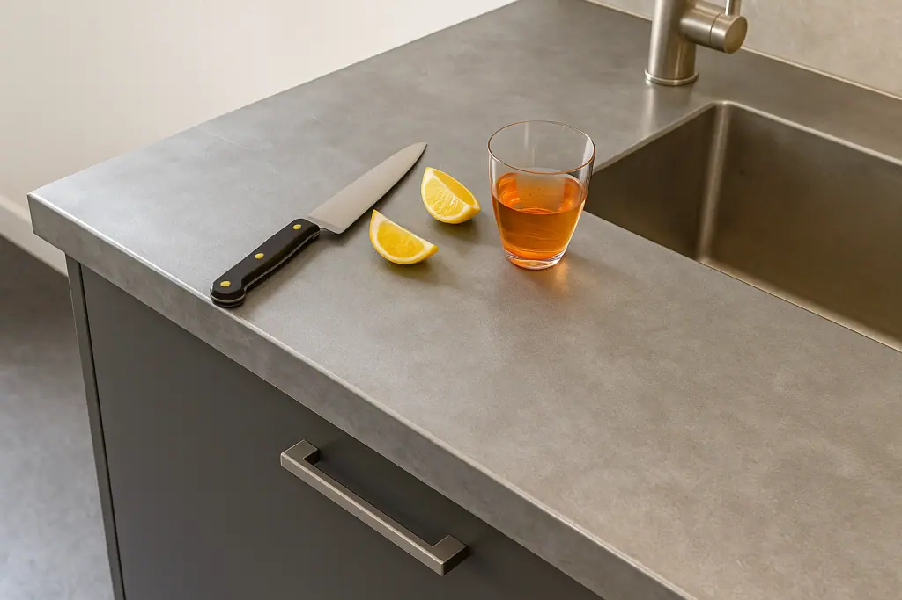
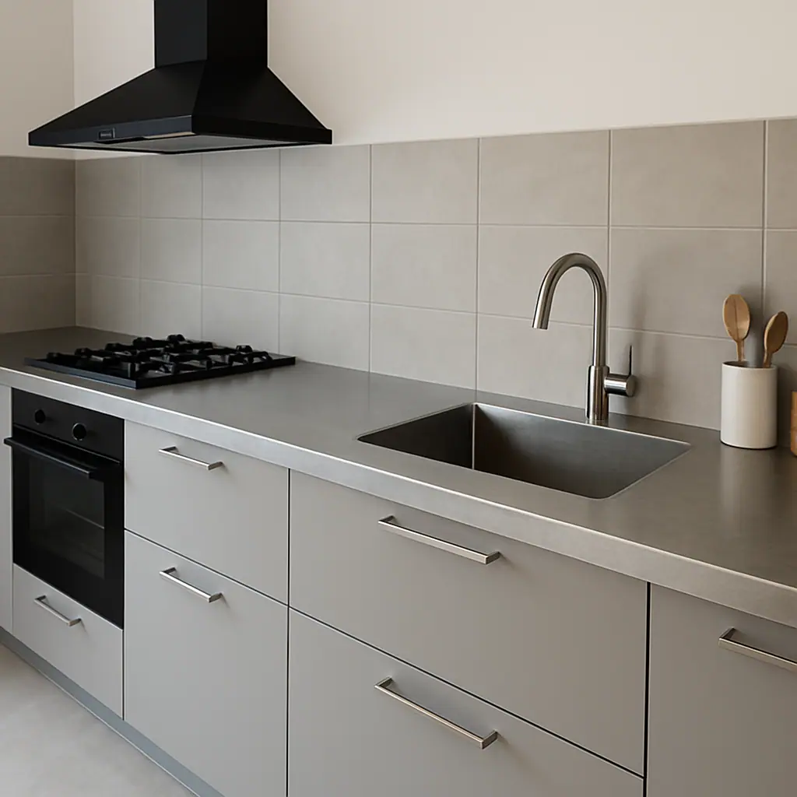

Our zinc worktops are an excellent choice for both home kitchens and demanding commercial environments such as bars, cafes, and restaurants. They offer a sleek, modern aesthetic that can also develop a rich, natural patina over time, adding distinctive character. Halman Thompson creates bespoke zinc worktops and countertops, expertly handcrafted in the UK to bring a unique blend of durability and sophisticated style to your space. We provide various finishes, including lightly aged and antique zinc , ensuring your new zinc countertop perfectly matches your vision. Simply contact our team for a quote or to discuss your requirements.


Cut to size
Every zinc worktop we produce is made to measure. At Halman Thompson, we understand that precision is key, especially for zinc kitchen countertops and commercial worktops that need to integrate seamlessly with existing fixtures. You provide the exact dimensions for your project and our skilled artisans will meticulously cut, shape, and finish your zinc worktop for a perfect fit. Whether you’re after a straight run, an L-shape, a U-shape, a zinc countertop with cut-outs for sinks and hobs, or a large surface for an industrial setting, we can create it. If you have a particular design or a complex layout in mind, share your drawings or ideas with us, and we’ll work with you to bring it to life. Please get in touch with our team to discuss your requirements and we’ll be happy to provide a fast, free quotation .
Ready to go
We ensure that your custom zinc worktop arrives fully prepared and finished, ready for straightforward installation. Our process is designed to be hassle-free for you. From the initial measurements to the final touches, we handle all aspects of the fabrication. The price of your zinc countertop includes delivery, and we typically work to a 5-8 week turnaround time. This means you can plan your project with confidence, knowing your high-quality, handmade zinc worktop will be ready to become a central feature of your space. Please get in touch for a bespoke quote . If you’re a business please use our Bespoke Quote for Businesses form .
Custom zinc worktops
Every zinc countertop from Halman Thompson is truly one-of-a-kind, individually handmade by our metalworkers in the UK. We start with the highest-quality zinc sheets , which our team then skilfully shapes to your requirements. A distinctive aspect of our work is the hand-aged finishes we offer, such as lightly aged or antique zinc. This careful process creates a unique look and feel for your worktop. You can also choose between a lacquered finish for a sealed and consistent appearance or an unlacquered surface that allows the zinc to develop its own natural patina over time.
Get in touch to discuss your needs or complete our bespoke order form for a fast and free quotation!
WHY CHOOSE ZINC WORKTOPS?
Choosing a zinc worktop from Halman Thompson offers many benefits. Zinc provides a unique look, from industrial-chic to sleek contemporary. If left unlacquered, it develops a beautiful, evolving patina, making your zinc countertop a truly personal feature. Beyond its distinctive style, zinc is exceptionally durable, naturally resisting corrosion and wear, which is ideal for busy kitchens and high-traffic commercial bars.
Every zinc worktop is custom-crafted to your exact needs, ensuring a perfect fit for any space, including home kitchens, utility rooms, workshops, garages or commercial settings. Zinc also has natural antibacterial qualities, making it a more hygienic surface for food preparation areas. Plus, zinc countertops are easy to care for and their smooth surfaces clean without fuss. As a 100% recyclable natural material, zinc is also an environmentally conscious choice for your project.
LOOKING AFTER YOUR ZINC COUNTERTOP
Maintaining your Halman Thompson zinc countertop is simple and easy, ensuring it remains a beautiful and functional part of your space for many years. Your zinc worktops can be wiped with a soft, damp cloth and warm water, using a gentle soap if needed. Avoid harsh chemical cleaners or abrasive pads on all zinc surfaces.
Lacquered zinc worktops have a clear protective coating that helps preserve their original finish and guards against spills and daily wear, whereas unlacquered zinc countertops are designed to develop a natural patina over time. This ageing process enhances its character with unique patterns and a deeper tone. While this patina is a sought-after aesthetic, it’s worth noting that acidic spills (like wine, lemon juice, or vinegar) can mark the surface more readily. Wiping these up promptly can minimise immediate marking, though many appreciate these evolving characteristics as part of the zinc’s unique story.
For all zinc worktops, using chopping boards for food preparation and trivets for hot pans is recommended to protect the surface from scratches and direct heat. With these simple care steps, your zinc countertop will continue to perform and look its best.


If you can dream it, we’ll make it.
Bars, balustrades, staircases, worktops, cladding and pieces that don’t have a name yet. Our designers and craftspeople work in brass, copper, zinc and steel, and alongside wood.